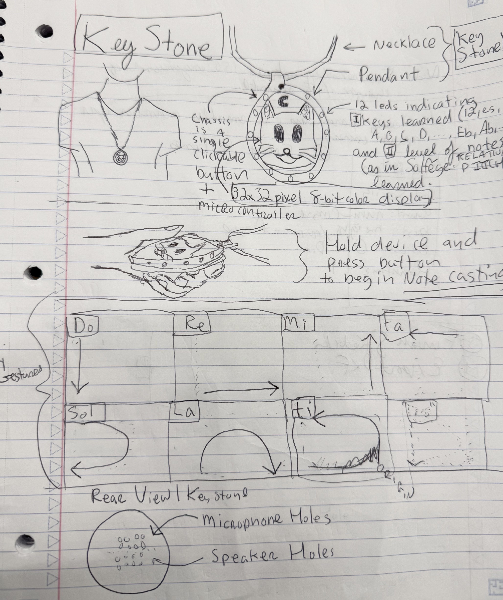
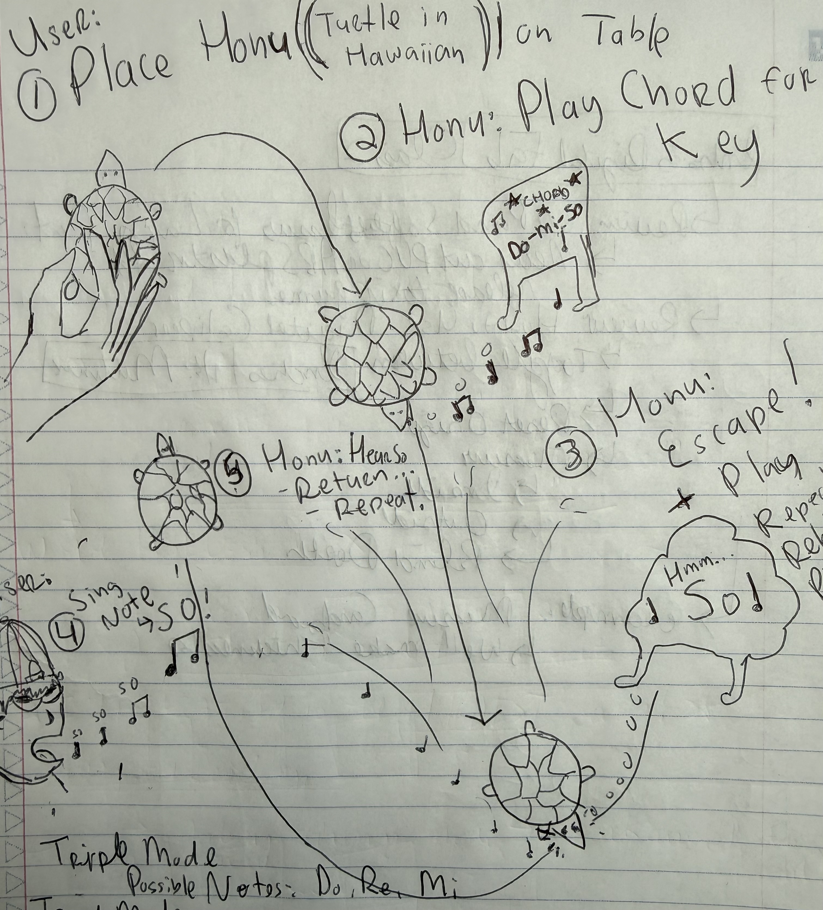

Week 1: Final Project Brainstorm
These project ideas revolve around fun of teaching, learning, and expressing music. They do this through the way all sense and internalize western music, relative pitch (in solfege form it would be: Do, Re, Mi, etc.). The principle across these projects is to enable anyone to learn music intuitively, through expression and feedback; vs. classically, through notation and mechanical reproduction.
Melodia

Project Overview
A musical electronic card game played on a 4x4 grid. Players score by creating valid musical and spatial connections. Each player is dealt 8 an electronic card each round. Every has a speaker to play a simple tone, show a basic note/symbol, and display arrows in its corners in any of the 8 cardinal/intercardinal directions: N, NE, E, SE, S, SW, W, NW. Cards snap into place at their sides or corners magnets, and the system tracks its placement in the grid so it can show where the next possible card placements can be. This way the grid can grow dynamically and drive strategy.
Technical Considerations
- 4×4 grid with 16 possible card positions
- Magnetically lockable cards, 45 degree corners. 8 magnets per card (cardinal_inter-cardinal orientation)
- 2 players, each with 8 cards
- LED lights underneath the 8 cardinal and inter-cardinal arrow shapes along card perimiter
- Center Display: 32x32px display for solfege names: Do, Re, Mi, Fa, Sol, etc.
- As cards connect, LED arrows update on all cards to show valid locations for next card to grow into 4x4 grid
- Distributed system in which each node can track and initiate gameplay (or charging deck acts as game controller)
Gameplay
Each card issued to a player has a randomized note identity (Do, Re, Mi, Fa, ..., etc.). Players take turns placing their 8 cards onto the 4×4 grid. A card can only be placed (connect) where the arrows on 'played cards' indicate. Points are earned by playing linear melodies (Do+Re), in any direction or sequence. Each pair earns 1 point. Chords (e.g. Do, Mi, So or So, Ti, Re) in sequence earn 2 points per pair. Each players card can track the total score at bottom of display for any played card.
Keystone

Project Overview
Keystone is a necklace-and-pendant style device roughly the size of an Apple Watch, but circular. It also acts as a physical button. It is worn on a necklace around the neck — take it off, hold it, and use it to train yourself to hear Solfège (relative pitch) in all 12 keys. At rest, the pendant display shows an Animal icon for any key you've learned (e.g. Eb = Elephant, D = Dog). Press the pendant to cycle through learned keys. Shake the device to enter game mode. Press to start.
Gameplay
Keystone plays a musical chord for the key, then a single note. You use swinging gestures (like casting a spell) to play a note and to assert its correctness. Get X notes correct in a row to advance to the next key. After all keys, you advance to harder levels (3, 5, 7, then 12 chromatic notes to guess).
Technical Considerations
- Pendant-style, circular form factor (Apple Watch shape)
- Doubles as a physical button
- Display: Minimum 32x32 pixels with 16 colors
- Keystone has 12 backlit LED holes similar to watch face numbers around circumference — indicate key progress and level depth.
- Trains Solfège / relative pitch across all 12 keys
- At-rest display: animal icon per learned key (Eb = Elephant, D = Dog…)
- Shake to enter game mode, click to start
- Swinging "spell-cast" gestures to identify notes
- Progressive levels: 3 → 5 → 7 → 12 notes (Chromatic)
- Display teach gestures and other commands
Key & Animal Mappings
Kids can wear their Keystone around their neck and immediately see one anothers status — the animal represents any key they've beat a level in. The 12 circumscribing LEDs represent how many total keys they've mastered, their color represents the levels learned (e.g. Triple, Penta, Dia, Chroma — all 12 notes)
| Note | Animal |
|---|---|
| C | Cat 🐱 |
| Db | Dolphin 🐬 |
| D | Dog 🐶 |
| Eb | Elephant 🐘 |
| E | Eagle 🦅 |
| F | Frog 🐸 |
| F#/Gb | Fox 🦊 |
| G | Giraffe 🦒 |
| Ab | Alpaca 🦙 |
| A | Alligator 🐊 |
| Bb | Beaver 🦫 |
| B | Bee 🐝 |
Honu 🐢

Project Overview
Honu (Hawaiian for Turtle) is a device that trains relative pitch, then making melodies with relative pitch, then battling friends with melodies in relative pitch. It is a 1-or-2 player game depending on the number of Honus present.
Honu is an electromechanical device in the form of a turtle, with a mechanism that lets it travel in X,Y directions, or rotate 360 degrees, across flat surfaces like a tabletop.
Technical Considerations
- Microphone and speaker on the body
- Each shell piece backlit by an LED (minimum 12)
- X/Y travel + 360° rotation across a flat surface (2 wheels + casters)
- Pressable for activation/deactivation and mode selection
- Swarm style proximity detection for Battle mode
- Maybe | Hold to Keystone to Synchronize
- Maybe | Single color display on bottom for mode selection
Modes
Trainer
The starting mode. After activation, Honu plays a major chord to set the key, then plays single notes from that key for you to identify by ear.
Gameplay
- The Honu is activated and deactivated through a long-press
- When set on the table, it emits a boundary-check melody and returns to its center point
- Honu plays a major chord in a key
- Honu then selects a random note in the key and plays it intermittently (every 3 seconds)
Levels
Trainer has 5 levels based on the number of notes taught:
- 1) Triple — Do, Re, Mi
- 2) Penta — Do, Re, Mi, So, La
- 3) Dia — Do, Re, Mi, Fa, So, La, Ti
- 4) Chroma — Do, Ra, Re, Me, Mi, Fa, Fi, So, Le, La, Te, Ti
Capture
Once you've completed Level 2, your Honu unlocks melody mode. It plays pentatonic melodies and you must reproduce them.
Gameplay
- Honu plays a short pentatonic melody
- You reproduce the melody using your Keystone device
- Confirmation advances you to the next, progressively harder melody
Battle
A two-Honu race kicked off by a starting melody. The first player to cast it takes the lead; you trade melodies back and forth, and each successful pass-back lights up a shell.
Gameplay
- A Honu plays a starting melody to begin the race
- First player to cast it with Keystone takes the lead — their Honu begins the timed race
- Two Honus chase each other across or around the table or ground
- You cast a melody your opponent must repeat — failure lets your Honu pass theirs
- Each successful pass-back lights up a shell piece
- Winner: most shells lit at end of race, or first to fill all shells